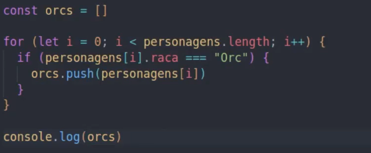
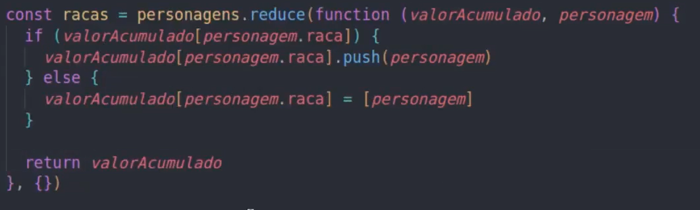

Funções
Criando funções
Funções são ações executadas assim que são chamadas ou em decorrência de algum evento.
Uma função em JavaScript é criada usando a palavra reservada function
Então para criar uma função, usamos o seguinte comando:
function NOME DA FUNÇÃO (PARAMETROS) {
Dentro das chaves o comando do que fazer.
}
Para deixar o código mais limpo, podemos usar o comando .addEventListener(NOME DA FUNÇÃO) logo abaixo a variável, como no exemplo:
Parâmetros
Exemplo de uma função com parametros para identificar se um número é ímpar ou par e retornar na chamada.
Podemos ter mais que um paramentros. A chamada pode pedir dois parametros ou mais dependendo da necessidade, mas se apenas um parametro for solicitado na chamada como no exemplo, podemos predefinir que se não for passado o parametro 1 ou 2, considerar 0, assim como no exemplo.
Por que sem a predefinição usariamos: n1, n2
E não n1=0, n2=0

Corrigir erro
Se uma função tiver um parâmetro e na hora de chamar a função o parâmetro não for incluido para chamar a função, acontece um erro, que o computador vai entender como undefined, para corrigir esse erro e deixar um valor já pre definido quando o parâmetro não for passado, como no exemplo abaixo.
Nesse exemplo, quando a função for chamada o primeiro resultado será olá isaac e o segundo será olá mundo, por que como nenhum parâmetro foi incluido, então vai acionar o que foi pre definido e não undefined.
Obs: Sempre que for usar esse recuros é importante que esse parâmetro fique por último dos outros parâmetros solicitados.
Objetos dentro de funções
Podemos usar objetos dentro de funções, e podemos declarar a propriedade do objeto de forma simplificada como na imagem abaixo.
nome é o mesmo que nome: nome
Alguns eventos
- onmouseenter - Disparado quando o mouse entrar no conteúdo.
- onmouseout - Disparado quando o mouse sair do conteúdo.
- onmousemove - Disparado quando o mouse mover dentro do conteúdo.
- onmousedown - Disparado quando o usuário clica e segura o mouse no conteúdo.
- onmouseup - Disparado quando o usuário soltar o mouse que tinha sido clicado e segurado.
- onclick - Disparado quando o mouse clica no conteúdo.
- onload - Disparado quando a página é carregada.
- ondblclick - Disparado com o duplo clique do mouse.
- onfocus - Disparado quando o input recebe um foco, ou seja, quando se clica no input.
- onblur - Disparado quando o sai do foco, no caso de um input, quando se sai do campo.
- onchange - Disparado quando ocorre uma mudança, por exemplo, quando seleciona outro item dentro de um select.
- onkeydown - Disparado quando uma tecla é pressionada.
- onkeypress - Disparado quando uma tecla é pressionada e solta.
- onkeyup - Disparado quando uma tecla é solta sobre o elemento.
- onresize - Disparado quando há um redimencionamento da janela.
Recursividade
E quando uma função tem uma chamada pra ela própria dentro da função.
Como no exemplo abaixo que mostra uma função para calcular o fatorial de um número.

Função Anônima
Funções anônimas são funções que não precisam de um nome e que são armazenadas em uma variável, usamos quando queremos ter uma flexibilidade em nossos programas, como mudarmos a forma como ela se comporta. Lembrando que ela só pode ser chamada após a sua criação, diferente de uma função normal, podemos escrever uma função anônima como no exemplo abaixo.

Ou pode ser escrita dessa outra forma.

High Order Function
High Order Function são funções que recebem outras funções como parâmetro e as executam em algum momento.
Por exemplo, ao invés de chamar várias funções no código, como uma função para somar, outra para subtrair, outra para dividir e assim por diante. Criamos uma função High Order que tem como parâmetro essas outras funções, isso deixa o código mais limpo e mais fácil de ser entendido, vou deixar um exemplo abaixo e uma explicação para melhor entendimento. entendimento.

Nesse exemplo, criamos a função calcular, que é a High Order Function e que recebe como parâmetros dois números e uma outra função, ela executa o console e chama outra função. Nós criamos a função de somar e subtrair e pooderiamos ter criado várias outras funções, mas ao invés de chamar essas funções com nomes diferentes durante todo o código, só iremos chamar a função calcular sempre que quisessemos alguma outra função.
A função criada dentro da High Order, é uma função anônima e pode ser substituida, ela só exige que dois parâmetros sejam passados e as funções criadas obedecem essa exigência.
Métodos em Arrays
São modo de interação com os arrays, objetos e high-order. Pedem como parâmetros um value, indice e o própeio array, é muito comum utilizar somente o value.
forEach

Nesse exemplo, a função exibirElemento irá mostrar os elementos de um array que é nossa lista, o for chama a função exibirElemento, e passa como parâmetro cada elemento que é o lista[i], depois passa o índice e por último o array como todo.
Todo esse código acima pode ser substituído por uma simples expressão como:

Resumindo, ele faz exatamente como o próprio nome da função diz, para cada elemento ... e depois chama a função desejada.
map
É utilizado para fazer uma transformação em um array, mapeando cada elemento de um array antigo para um novo, é como se ele copiasse um array para um novo array.
Primeiro vou colocar o código passo a passo, para depois mostrar o modo simplificado.

Agora vamos ver o modo map para simplificar todo esse código. O return é como se tivesse fazendo um push para o array, como no exemplo acima.

Filter
Utilizado para filtrar elementos de um array, seleciona elementos específicos e cria um novo array, vou colocar um exmeplo de código com a mesma função, porém sem usar o comando filter.
Agora vamos ver o comando simples que é utlizando o filter, e obteremos o mesmo resultado, só usamor o value como parâmetro, a condição utilizada no return é a condição utilizada para fazer a filtragem.

Reduce
Utilizado para transformar um array em um outro elemento, seja um array ou um objeto, um número, uma string, qualquer coisa. Ele é diferentedos outros, ele acumula valores, vai acumulando valor do elemento anterior. Ele possui 4 parâmetros e não 3 como antes, o primeiro que le recebe é o valor da interação antertior, e os outros como das outros métodos. O return nesse caso vai passar o valor para a próxima interação, assim conseguimos a cada interação somar o valor da interação anterior acumulado com o elemento atual.
Nesse exemplo, o número 0 é o segundo parâmetro exigido pelo reduce, que é o mesmo que o valor inicial.
Pode-se também com reduce reorganizar dados para uma melhor organização do código, vou colocar um exmeplo abaixo de como utilizar o reduce para organizar melhor os dados.
Nesse exemplo, tinhamos um array com vários objetos, e usamos o reduce para separar por raça. O segundo parâmetro foi um objeto vazio, vou me esforçar para ler esse código de maneira clara.
Cria o método reduce, passa uma função anônima que verifica se o a raça do personagem for verdade, ele vai dar um push no personagem e armazenar, se for falso, ou seja, de outra raça, ele vai criar um novo array para cada raça e vai separar e armazenar.
Sort
Utilizadopara ordenar arrays em ordem alfabética e numerica. O sort ele altera o array original, então é bom lembrar desse detalhe.
Como se utilizar o sort:
Vamos utilizar uma função de callback e passar dois parâmetros, que podem ser a e b, por que o sort vai fazer uma comparação entre dois elementos qual deles ele vai precisar colocar na frente, depois disso ele vai comparar o último elemento comparado com o próximo e assim até finalizar o array.
O return se comporta diferente, ele tem que devolver um número negativo e outro positivo, para fazer a comparação. Em um cenário onde quero que seja ordenado numericamente, posso passar a - b, assim ele vai calcular, se der o resultado negativo ele sabe que precisa colocar o a começo do array e se for positivo o b para o final. Para fazer de forma decrescente basta colocar o return b - a.
Uma dica para que o array não seja modificado e se mantenha original, é usar o slice sem nenhum parâmetro, assim ele vai criar uma cópia do array de todos os elementos e ai vamos passar a cópia e não mais o array original, com isso conseguimos armazenar em um novo array, como na imagem abaixo.